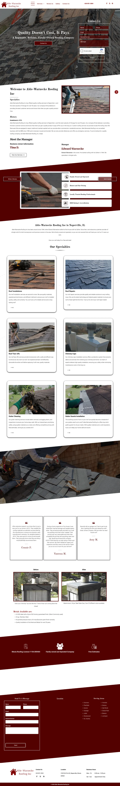
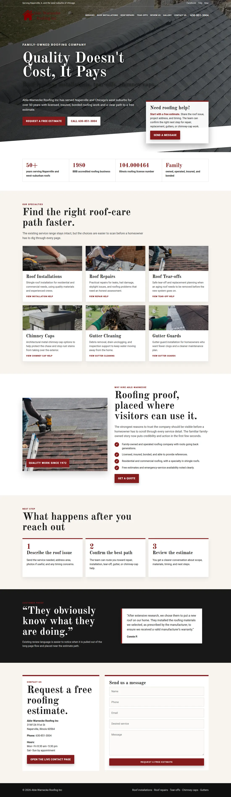
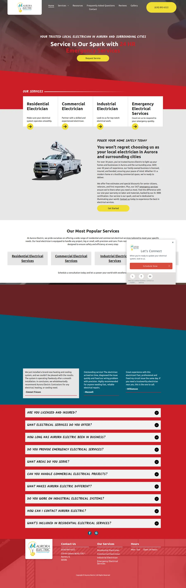
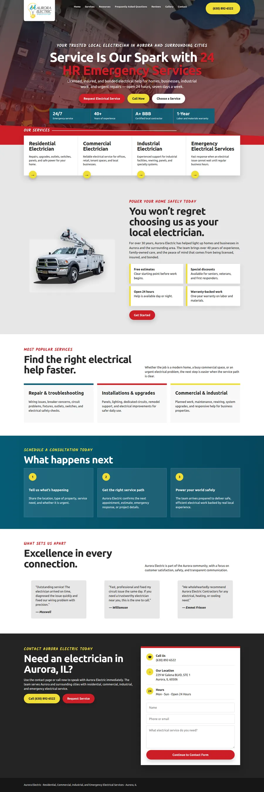

Able-Warnecke Roofing Inc.
Traditional roofing DNA with real logo, roof imagery, maroon CTA palette, serif headline feel, and clearer estimate/phone path.


Controlled rerun using the new checklist: fingerprint first, not generic, not a clone, side-by-side review, package QA, and forbidden-language checks.
Traditional roofing DNA with real logo, roof imagery, maroon CTA palette, serif headline feel, and clearer estimate/phone path.


Real Aurora logo/hero/truck cues, yellow CTAs, red angled band, and clearer call/request flow.


Blue/orange painting brand DNA, real logo/hero imagery, stronger estimate CTA, trust strip, and 3-step estimate path.